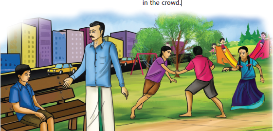
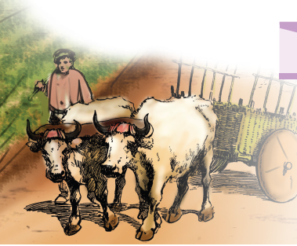
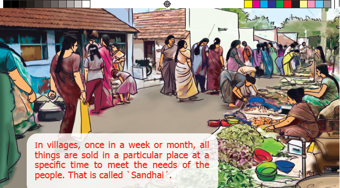
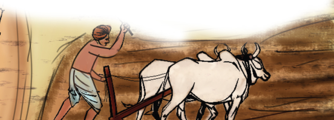
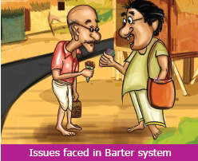
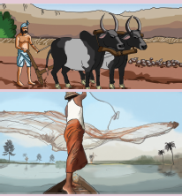
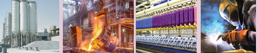
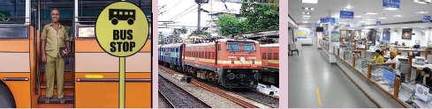

The laughter of children echoed throughout the children’s park of that apartment. Some slided down joyfully down the slide and some went up and down in the see – saw, shouting cheerfully. Others were swinging so high and fast, in the swings as if they were about to reach the sky. Some children were waiting near the swings to play next.
Kavin did not join with any of these children. He sat alone in a corner, staring somewhere. His uncle Mohan noticed Kavin and came near him.
Kavin, are you going to play with your friends? asked his uncle as he sat next to Kavin.
Uncle, everyone teases me, calling me a villager, said Kavin, with tears rolling down his eyes. Even our Vimalan laughs along with them. I came here for the holidays with so much of excitement. Now, I regret my presence here. I want to go back to our village, uncle, sobbed Kavin.
Is it so? Where is Vimalan? asked his uncle and started to search for his son in the crowd.

Vimalan. called him in loud voice. On hearing his father’s voice, Vimalan enquired, did you call me, dad? and came near him.
Did everyone tease Kavin? asked Mohan.
Vimalan didn’t utter a word. He stood quietly.
Even though I live in this big city, I also hail from the same village. My roots are still there said his father worriedly. Then he added, Go and bring your friends. I have to tell something to you. Saying this, he sat near Kavin.
When Vimalan brought his friends, his father made them all sit down together. Mohan asked the children, let me come to the point directly. Do you know from where do we get all the food?”
The rice and pulses we eat? We buy them from shops, said Anandhan
Tell me, where do the shopkeepers get these things from?
I guess they would buy them from another shop.
I think they would buy them from those who grow crops, uncle, said Inba.
Correct! We call those people who raise crops as farmers. Farming is the main occupation in villages.
The children looked at each other in surprise.
The farmers grow various crops like pulses, grains, vegetables etc., and send them to the shops in cities. We buy and consume them”.
Uncle, I have a doubt, said Kavin.
Tel me, Kavin
In villages, I have seen people selling all kinds of things in a place. Why do they call it ‘Sandhai’, instead of shops?
Yes, Kavin,
HOTS
Imagine if money disappears one day?

In villages, once in a week or month, all things are sold in a particular place at a specific time to meet the needs of the people. That is called ˋSandhaiˊ

Do you all know from where do they bring these things to Sandhai?
We don’t know, uncle”, said the children.
I told you already that the things which are produced in villages are brought to sandhai.
“Fine, Kavin. Do you know what activities are carried out in a sandhai?”
Buying and selling, said Kavin.
Very good Kavin. Apart from going to the sandhai with your mother, you have also noticed what’s happening around you.
The finished goods which are bought from the market to fulfill the daily needs of the consumers is called consumer goods. Example: rice, clothes, bicycles, etc.
Hearing this, Kavin smiled.
All the children said in unison, without knowing the importance of villages, we teasted kavin. Forgive us, uncle, we won’t hurt anyone herafter. We wish to know more about this.

Plan for a model Sandhai.
Sure, I will tell you, said Mohan,
Small traders and other people buy things from sandhai, explained Mohan.
Do you know in olden days we had a system of exchanging goods for other goods, called barter system? For example, exchange a bag of rice for enough clothes.
A person who has rice in surplus and a person who has cloth in surplus, will exchange on the basis of their needs. But, here the problem is that the person who has clothes should have the willingness to buy rice. Only then, the exchange through barter system will take place.
When they exchange commodities, they may lead to certain problems, when comparing the differences in the value of commodity. To solve this problem, people invented a tool called money.
Really. Is it so exclaimed the children?
“You know that early man, who hunted and gathered food, later learnt to cultivate crops. When they found rivers which provided them water, settled down permanently near the rivers. These permanent settlements were called villages. Agriculture remains to be the root of our economy even today. Man has no limits for his demand and desire. Based on this, man started to learn new occupations. Those who are involved in farming and grazing are called farmers or cultivators”.
Is agriculture the primary occupation?
Yes, there are certain other primary activities like farming.
Agriculture and industries are helpful in the economic development of our country. Our country’s economy is based on three economic activities. cultivators

The amount from the income which is left for future needs after consumption is called savings.
அளவறிந்து வாழாதான் வாழ்க்கை யுளபோல
வில்லாகித் தோன்றாக் கெடும். -குறள் 479
விளக்கம்: தன் செல்வத்தின் அளவு அறிந்து அதற்கு ஏற்ப வாழாதவனுடைய வாழ்க்கை பல வளங்களும் இருப்பது போல தோன்றி உண்மையில் இல்லாதவனாய்ப் பின்பு அப்பொய்த்தோற்றமும் இல்லாமல் அழியும்.
Sing or Play the song ஒன்றிலிருந்து இருபது வரைக்கும் கொண்டாட்டம், கொண்டாட்டம். Interpret the lyric of the song and what is the logic behind the song.
Fill up the given table.
Serial number 1 |
Country, Germany |
Write the Currency name |
Write the Currency name |
Serial number 2 |
Country, Brazil |
Write the Currency name |
Write the Currency name |
Serial number 3 |
Country, India |
Write the Currency name |
Write the Currency name |
Serial number 4 |
Country, Argentina |
Write the Currency name |
Write the Currency name |
Serial number 5 |
Country, China |
Write the Currency name |
Write the Currency name |
They are concerned with the production of raw materials for food stuff and industrial use. Primary activities include

Is agriculture confined only to villages? What other works do the villagers do?
What will a village look like uncle?” interrupted Inba.
Agriculture is the primary occupation. There won’t be any kind of facilities like our cities. At the same time, they get their basic needs fulfilled easily. There are small shops. Vegetables are grown in abundance, just like rice and pulses. Though the sugar that is added in our milk, coffee and tea is produced in sugar mills, the raw material sugarcane is cultivated in villages. From chilies to mustard, all those provisions used for food are grown in villages.
Wow! My mother told me that these things are very expensive. Therefore, the villagers must be so wealthy!” said Adithya.
No, not like that. They are just producers. Their products are bought and sold by some mediators. So, the farmers get very little money.
What a pity! But the villages are the real shadows of cities”, exclaimed Anandhan.
Even Gandhiji has said that the villages are the backbone of our country.
Yes, what a wonderful saying!” said Kavin excitedly.
At that time, the mobile phone rang. Mohan attended the phone. Vimalan’s mother Ponni had called.
What are you chatting about with the children for so long? The food is ready. Bring them home”, saying so, she cut the call.
Children, come, let’s go home. Food is ready” Mohan got up and the children followed him with joy.
Inba asked, “Uncle, you said how villages are important. Aren’t cities important?
No Inba. Both cities and villages are important on their own.
If it is so, tell us about the importance of cities”, asked Inba again.
That is good. I will tell you. More than 50 percentage of the world’s populations live in cities. In our state Tamil Nadu, 47 percentage of the people are in cities.
Wow, they exclaimed.
Not only that. Tamil Nadu is well developed in secondary and tertiary activities as well. These are city centered activities.
We feel very proud to hear this uncle. Tell us about those activities.
Uncle Mohan said, Well, apart from this, employment opportunities are more in cities than villages. People involved in small scale industries and unorganized sector are mostly found in cities.
We don’t understand.
In villages, there are only a few saloons and laundry shops. But, in cities the number of such small-scale workers are more. This results in additional income in cities.
Really?
“Yes, well paved roads, ports, airports and railway stations support trade. Many branches of banks help in the circulation of money and boost the country’s economy. All these are termed as tertiary activities.
Vimalan exclaimed, “Even being in the city, I never knew about all these.
Inba said, we really got to know more information, uncle
Good, will you compare cities and villages in the future?
The raw materials obtained from the primary activities are converted into finished products through machinery on a large scale. These activities are called secondary activities.
Industries are classified on the basis of the availability of raw materials, capital and ownership.
On the basis of raw materials, industries are classified as

Put tick mark in appropriate box
Serial number 1 |
Occupation, Farmer |
Primary activity |
Secondary activity |
Tertiary activity |
Serial number 2 |
Occupation, Teacher |
Primary activity |
Secondary activity |
Tertiary activity |
Serial number 3 |
Occupation, Tailor |
Primary activity |
Secondary activity |
Tertiary activity |
Serial number 4 |
Occupation, Engineer |
Primary activity |
Secondary activity |
Tertiary activity |
Serial number 5 |
Occupation, Bank Manager |
Primary activity |
Secondary activity |
Tertiary activity |
I already told you that industries produce goods and distribute them to the people. For this purpose, some services are required. These services are called tertiary activities or service sectors. The service sector serves the people to fulfill their daily needs like:

Never, we won’t say such a thing. If anyone talks like that, we will explain whatever we have learnt from you replied the children.
Come let’s go and have our lunch. Said Mohan.
Children said that they will come after playing for some more time.
Holding Kavin’s hand, they all ran towards the park.
Mohan, an economics teacher, felt proud of their unity and satisfied of clarifying something good to the children.
Consumer – the one who uses the products
Commodity – products
Occupation – work or Job
Settlement – living place of human being
1. The producers of food grains are
2. Collection of honey is a occupation
3. The conversion of raw materials into finished goods is called
4. According to Gandhiji the villages are of the nation.
5. The percentage of population in the cities of Tamil Nadu is
1. Cattle rearing – Secondary occupation
2. Food processing – Services
3. Iron & Steel Industry – Primary occupation
4. Telephone – Agro based industry
5. Cotton Industry – Tertiary occupation
1. Small scale Industry – Transaction of Money
2. Forest based Industries – Information Technology
3. Services – Paper Industries
4. Banking – Cattle rearing
1. Agriculture is a (Primary or Secondary) occupation
2. Economic activities are divided on the basis of (ownership or use)
3. Sugar Industries are (Primary or Secondary) activity
4. Agro based industry (Cotton or Furniture)
5. Dairy farming is a (Public sector or co-operative sector)
1. Sandhai – Define
2. What is called barter system?
3. What is trade?
4. What is Savings?
5. What was the necessity for the invention of money?
6. What was the reason for the development of settlements near water bodies?
7. What are called secondary occupation?
8. Name the city centred industries.
1. List out the important primary occupations of your district
2. Mention the manufacturing industries found in your district
3. How are the industries classified on the basis of raw materials?
4. Write down the occupations in the service sector
5. What do you know about the features of cities?
Serial number 1 |
Occupations in Villages |
Occupations in cities |
Occupations in Villages and cities |
Serial number 2 |
Occupations in Villages |
Occupations in cities |
Occupations in Villages and cities |
Serial number 3 |
Occupations in Villages |
Occupations in cities |
Occupations in Villages and cities |
Serial number 4 |
Occupations in Villages |
Occupations in cities |
Occupations in Villages and cities |
Serial number 5 |
Occupations in Villages |
Occupations in cities |
Occupations in Villages and cities |
Activity
|
|
|
Eternal. நிலையான
Kinship. இரத்த உறவு
Contemporary. சமகாலத்திய
Metallurgy. உலோகவியல்
Preceptor. ஆசான்
Doctrine. கோட்பாடு
Virtuous. நல்லொழுக்கம்
Corpse. சடலம்
Monastery. மடாலயம்
Treatise. ஆய்வுக்கட்டுரை
Manufacture. உற்பத்தி
Deplete. பயன்பாட்டில் குறைதல்
Sustainable. நிலைநிறுத்துதல்
Tertiary. மூன்றாம் நிலை
Resource. வளம்
Biotic. உயிருள்ள
Abiotic. உயிரற்ற
Independence. சுதந்திரம்
Republic. குடியரசு
Heritage. பாரம்பரியம்
Aquatic. நீர்வாழ்வன
Astrophysicist. வான்இயற்பியலாளர்
Democracy. மக்களாட்சி
Drafting Committee. வரைவுக்குழு
Preamble. முகப்புரை
Secular. மதச்சார்பின்மை
Socialist. சமத்துவம்
Sovereign. இறையாண்மை
Consumer. நுகர்வோர்
Commodity. விற்பனைப் பொருட்கள்
Occupation. தொழில்கள்
Settlement. குடியிருப்பு